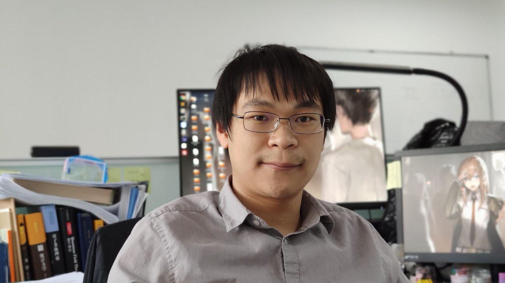
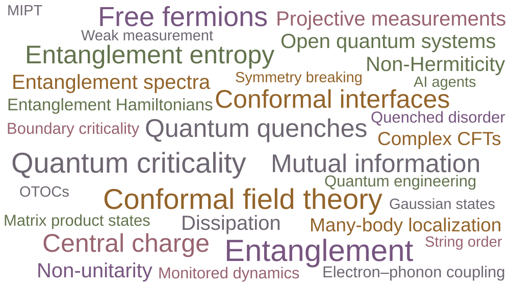

Quantum many-body physics
My research is motivated by the possibility that even highly complex quantum many-body problems can yield general, and sometimes universal, results. The diversity of many-body systems continually offers new phenomena to understand and new questions to ask. I pursue these questions through simple toy models that isolate essential features, effective theories that capture the relevant physics, and exact solutions of complex many-body systems. Developing theoretical and numerical methods is an integral part of this effort, with applications to entanglement, criticality, topology, and nonequilibrium physics.
AI for Physics
Large language models can already substantially accelerate exploration in theoretical physics by making unfamiliar knowledge more accessible and supporting analytical and numerical work. They lower barriers between fields, shortening the path from understanding an idea developed in one area to recognizing where it can be useful and adapting it to problems in another. I am interested in using and developing these capabilities to connect different areas of physics, and in exploring the possibility of autonomous research, where AI systems formulate questions, develop and test approaches, and refine their ideas through calculation and verification.
